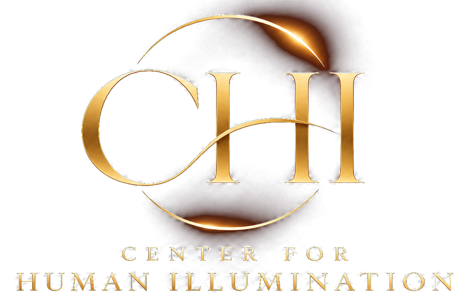
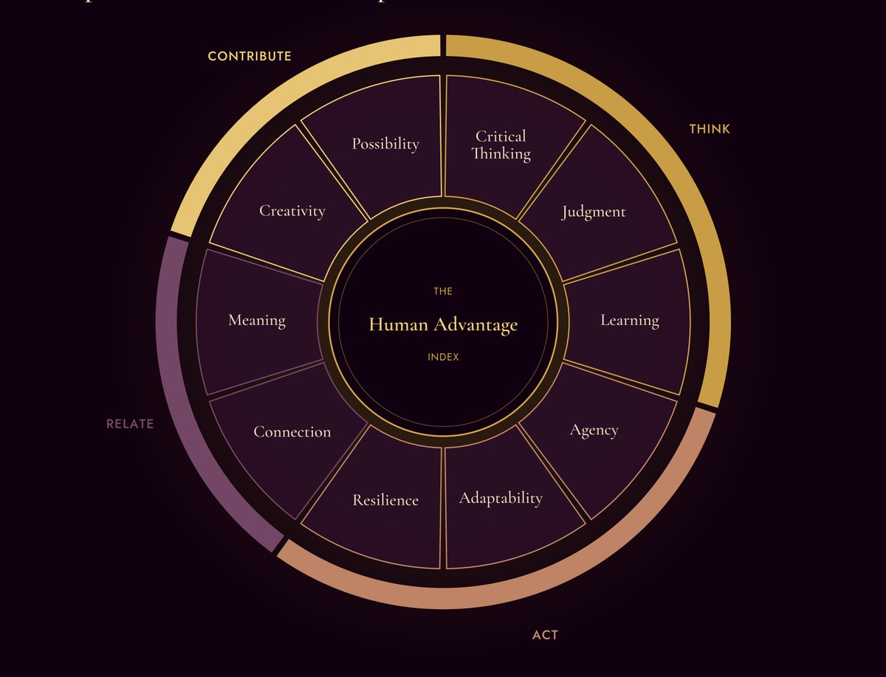
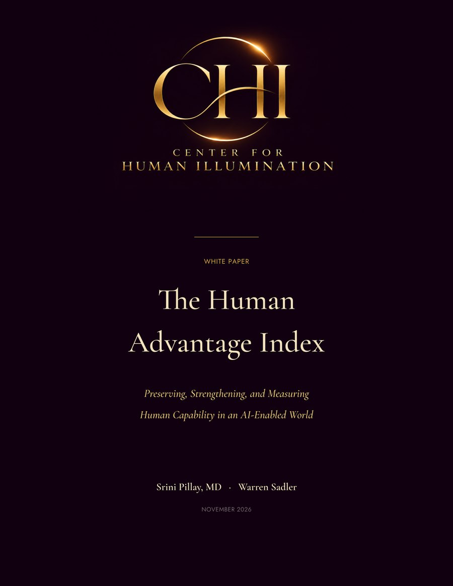

Advancing Human Potential. Expanding Possibility.
An institution dedicated to the human side of the AI transformation, and home of the Human Advantage Index.
Your copy of The Human Advantage Index is on its way. Download it now
AI is changing what work asks of people. The question is whether people grow with it.
The same AI tools can make people sharper or quietly make them weaker. The technology is the same in both cases. What differs is how people engage with it.
Human capacity grows
Research links deliberate, engaged use of AI to gains in productivity, quality, and even creativity.
Human capacity erodes
Passive reliance is associated with weaker critical thinking, poorer skill retention, and narrower creative output, even among experienced professionals.
Evidence reviewed in The Human Advantage Index white paper, Center for Human Illumination, 2026.
Where human advantage is measured, built, and shared.
About the Center
Our mission and the question at the heart of our work.
Read more → ii.The Human Advantage Index
Ten capabilities that keep people ahead of the tools.
Explore the Index → iii.For Organizations
Measure human advantage and link it to revenue and ROI.
See how → iv.Research
The white paper and the evidence behind the Index.
View research → v.Human Advantage Certified
The standard for organizations that grow their people as they grow their AI.
See the standard → vi.Work With Us
Bring the Human Advantage Index to your organization.
Get in touch →“What is our Human Advantage Index, and how does it link to revenue and return on AI?”
Illuminating what makes us human, so we can build on it.
The Center for Human Illumination is dedicated to the human side of the AI transformation.
Advancing Human Potential. Expanding Possibility.
We are not against AI, and we are not an AI safety institute. We believe AI's greatest promise will be realized only if human potential grows alongside it, and if people keep expanding what they believe is possible.
As AI takes on more of the cognitive work that once defined expertise, the capacities that make people valuable can either deepen or quietly fade. The Center exists to understand those capacities, measure them, and help individuals and organizations strengthen them, so that progress in technology becomes progress for people too.
“What should humans never outsource?”
Three disciplines, one purpose.
Science and Technology
Grounding every tool and framework in research from neuroscience, psychology, and the study of human–AI work.
Behavior and Product
Turning what we know about human behavior into instruments, programs, and products people actually use.
Research and Implementation
Moving from insight to practice inside organizations, and measuring whether it works.
From discovery to scale.
Discover
Study what keeps people capable as AI advances.
Measure
Make human capability visible with the Human Advantage Index.
Build
Create tools and programs that strengthen it.
Transform
Help organizations redesign work around people and AI together.
Scale
Share it through standards, certification, and partners worldwide.
What is your Human Advantage?
Talk with us about measuring and growing the human side of your AI transformation.
Start the ConversationScience and technology, built together.
The Center brings a psychiatrist and neuroscientist of human potential together with a technology builder, so that what we learn about people becomes something people can use.
Srini Pillay, MD
Srini Pillay is a Harvard-trained, board-certified psychiatrist and former faculty member at Harvard Medical School and Harvard Business School. He was Director of the Outpatient Anxiety Disorders Program and the Panic Research Program at McLean Hospital.
He is the founder and CEO of NeuroBusiness Group, named a Top 20 global leadership development firm by Training Industry, and co-founder and Chief Medical Officer of Reulay. He teaches at Duke Corporate Education and Mobius Executive Leadership, is a Fellow of the Institute for the Meanings of Science, and serves on the board of the National Institute for Play.
He is the author of three books published in eight languages, including Your Brain and Business and Tinker Dabble Doodle Try, and of one musical. His work centers on human possibility: how people expand what they believe they can do.
Warren Sadler
Warren Sadler is a technology entrepreneur and product builder. He is co-founder and CEO of Therify and a Y Combinator founder.
His background spans engineering, product development, and organizational leadership across healthcare and enterprise. At the Center, he leads the building of the platforms and products that bring the Human Advantage Index to people and organizations at scale.
Measuring people as carefully as we measure machines.
Organizations track every detail of their AI systems, yet rarely measure what is happening to the people who use them. The Center was founded to change that: to make human capability visible, to strengthen it deliberately, and to show that the human side of AI is where much of its value is won or lost.
What is your Human Advantage?
Talk with us about measuring and growing the human side of your AI transformation.
Start the ConversationTen capabilities that keep people ahead of the tools.
The Human Advantage Index (HAI) measures the capacities that let people direct, question, and add to what AI produces.
How people think, act, relate, and contribute.
The ten capabilities fall into four lenses. Each capability is scored on its own, producing a profile that shows where human capacity is growing, where it may be eroding, and where to invest.

How a person evaluates information, decides, and builds understanding
Critical Thinking
Do I examine claims, including AI outputs, before accepting them?
The disciplined evaluation of information, claims, and reasoning, including one's own and AI's, before accepting them.
Judgment
Do I make sound decisions when information is incomplete and stakes are real?
The capacity to make sound decisions when information is incomplete, values are in tension, and consequences are real.
Learning
Am I still building skill and understanding, rather than outsourcing them?
The ongoing capacity to acquire skill and understanding, so that competence lives in the person rather than only in the tools they use.
How a person initiates, adjusts, and sustains effort under change
Agency
Do I initiate and direct my own work and choices?
The capacity to initiate action, make choices, and direct one's own work and life with a sense of ownership.
Adaptability
Do I adjust effectively as tools, roles, and conditions change?
The capacity to adjust thinking, behavior, goals, and skills effectively as tools, roles, and conditions change.
Resilience
Do I recover and grow after setbacks and sustained uncertainty?
The capacity to recover from setbacks, sustain effort through prolonged uncertainty, and grow from adversity.
How a person builds trust with others and links work to purpose
Connection
Do I build relationships of trust and mutual understanding?
The capacity to build and sustain reciprocal relationships with other people, marked by trust, empathy, mutual effort, and understanding.
Meaning
Does my work feel worthwhile and connected to a purpose I value?
The experience that one's work has worth, significance, or a higher purpose, and that it connects to what one values.
How a person generates new ideas and opens futures the past does not predict
Creativity
Do I generate ideas that go beyond recombining what already exists?
The capacity to generate ideas, approaches, and work that are both new and useful, including ideas that go beyond recombining what already exists.
Possibility
Do I see and commit to futures that the past does not predict?
The capacity to see, imagine, and commit to futures that the past does not predict.
Simple to take, rich to read.
The HAI is self-scoring. Each capability score is the average of its three items, and the overall Index is the average of the ten. Negatively worded items, included to reduce agreement bias, are reverse scored automatically.
The three-month frame anchors answers in recent behavior rather than general self-image, and it lets the Index be repeated each quarter, for example before and after an AI rollout. The profile across the ten capabilities tells you more than the overall score.
Result bands are provisional until population norms are established. Validation research is part of the Center's research agenda.
What people report, and what people do.
Self-assessment
People rate the ten capabilities over the past three months. It captures motivation, meaning, resilience, and other inner states that behavior alone cannot show.
Observed AI interaction analysis
With consent and strong privacy governance, de-identified interactions with enterprise AI tools are aggregated and scored. The way people prompt AI reveals a great deal about how they think.
The gap between what people report and what they do is itself a finding. Results are reported at the team and organizational level, to guide development rather than monitor individuals.
What is your Human Advantage?
Talk with us about measuring and growing the human side of your AI transformation.
Start the ConversationWhat is your Human Advantage Index?
Every company investing in AI should be able to answer that question, and say how it links to revenue and return on AI.
The return on AI depends on the people using it.
Organizations are spending heavily on AI, yet most are not yet seeing measurable financial returns.
The return on AI is a product of two factors: the capability of the technology and the capability of the people using it. Most organizations measure only the first. The Human Advantage Index measures the second.
On returns from enterprise AI: MIT Project NANDA, The GenAI Divide: State of AI in Business 2025, July 2025.
A leading indicator you can test.
Human capability
The ten HAI capabilities
Quality of AI use
Observed behaviors with AI tools
Operational outcomes
Quality, errors, speed, retention
Financial outcomes
Revenue, realized AI ROI, cost
Measure a baseline, track the Index quarterly alongside business metrics, compare teams with similar AI access, and test whether gains in human capability come first. These links are tested within each organization.
Six steps to human advantage.
Baseline
Run the self-assessment and AI interaction analysis in pilot units.
Diagnose
Compare reported and observed results; find capabilities at risk.
Redesign
Sort work into what AI owns, what people and AI share, and what people own.
Develop
Target programs at the capabilities most at risk.
Link
Report the Index quarterly alongside business metrics.
Certify
Apply for Human Advantage Certified.
- What is our Human Advantage Index, and how does it vary across teams and functions?
- Is our use of AI building human capability or eroding it?
- Where do what our people report and what they actually do with AI diverge?
- Which human capabilities are most closely tied to our revenue drivers?
- How much of our AI investment is being realized through human capability, and how would we know?
- Are we rewarding speed alone, or quality and long-term development as well?
A mark for organizations that grow their people as they grow their AI.
For each of the ten capabilities, certification combines a People score, drawn from employees' Index results, with a Practice score, in which employees rate how well the organization's practices support that capability.
Delivered by NeuroBusiness Group
NeuroBusiness Group (NBG) is the first authorized provider of the Human Advantage Index, with operations in the United States, Greece, and India.
What is your Human Advantage?
Talk with us about measuring and growing the human side of your AI transformation.
Start the ConversationA mark for organizations that grow their people as they grow their AI.
Human Advantage Certified recognizes organizations whose adoption of AI strengthens human capability rather than eroding it. Like the standards that transformed green building, it rests on transparent criteria, documented evidence, and independent review.
Four requirements every organization meets.
Prerequisites earn no points. They are the foundation every certified organization shares.
Baseline Measurement
The Human Advantage Index self-assessment completed within the past 12 months, with at least 60% of in-scope employees taking part.
Privacy and Consent
A written policy for any AI interaction analysis: de-identified data, team-level reporting, and no individual penalized for their results.
Executive Sponsor
A named senior leader accountable for human advantage, with results reported to the leadership team.
Employee Transparency
Employees are told what is measured, why, and how results are used.
100 points across six categories.
Organizations earn points by documenting what they actually do. Every credit is backed by evidence such as policies, workflow maps, program records, and reports.
Measure
15Coverage of the Index across the workforce, observed AI interaction analysis in place, and the Index repeated at least twice a year.
Work Design
25Key workflows sorted into what AI owns, what people and AI share, and what people own; human review points for consequential decisions; deliberate productive friction in skill-building tasks; protected time for learning.
Develop
20Programs targeted at the organization's lowest-scoring capabilities, manager training for leading people who work with AI, and AI training that teaches critical evaluation, not just tool use.
Culture and Wellbeing
15Practices that support meaning, connection, and resilience, such as linking AI use to purpose, team norms, and support during change.
Link and Report
15The Index reported alongside business metrics and at board level, with optional public disclosure.
Improvement
10Measurable improvement in Index scores or observed AI behaviors over 12 months.
Innovation Bonus
+5An original practice that strengthens human advantage, shared with the network.
Six steps to certification.
Register
The organization registers its scope: the whole company, a division, or a region.
Measure
Run the Human Advantage Index and, if chosen, the observed AI interaction analysis.
Document
Submit evidence for the prerequisites and each credit pursued.
Independent Review
Reviewers check the evidence credit by credit. Organizations can respond to questions and appeal decisions.
Award
The certification level is set by the total points earned.
Renew
Every two years, with fresh measurement. Organizations can apply to move up a level at any time.
Prepared by providers. Awarded independently.
The Center sets the standard. Certification decisions are made by an independent review panel, separate from any provider that helps organizations prepare.
Authorized providers such as NeuroBusiness Group help organizations measure, redesign work, and develop their people. They do not award certification. Keeping preparation and review apart is what gives the mark its meaning.
What is your Human Advantage?
Talk with us about measuring and growing the human side of your AI transformation.
Start the ConversationThe evidence behind human advantage.
Our research brings together neuroscience, psychology, and the fast-growing study of how people work with AI.

The Human Advantage Index
Srini Pillay, MD, and Warren Sadler set out the evidence behind the Index, define each capability, and explain how organizations can measure human advantage and link it to business results, drawing on more than 50 sources.
- What the research says about human and AI strengths
- How AI can strengthen or erode human capacity
- The ten capabilities and how they are measured
- How corporations can link the Index to revenue and ROI
- Limitations and the research agenda ahead
Your copy of The Human Advantage Index is on its way. Download it now
What comes next.
Validating the Index
Psychometric research to establish norms, reliability, and validity across roles and regions.
State of Humanity
A planned annual report on how human capability is changing as AI spreads through work.
Insights
Articles and briefings on the human side of the AI transformation.
What is your Human Advantage?
Talk with us about measuring and growing the human side of your AI transformation.
Start the ConversationWhat is your Human Advantage?
Talk with us about measuring and growing the human side of your AI transformation.
We have your message and will be in touch shortly.
Srini Pillay, MD
Founder and CEO, NeuroBusiness Group
Sumit Seth
Managing Director, NBG Asia
solutions@neurobusinessgroup.com
NeuroBusiness Group, first authorized provider of the Human Advantage Index